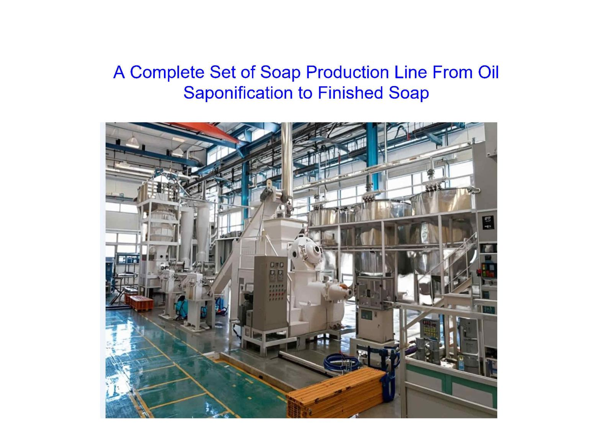
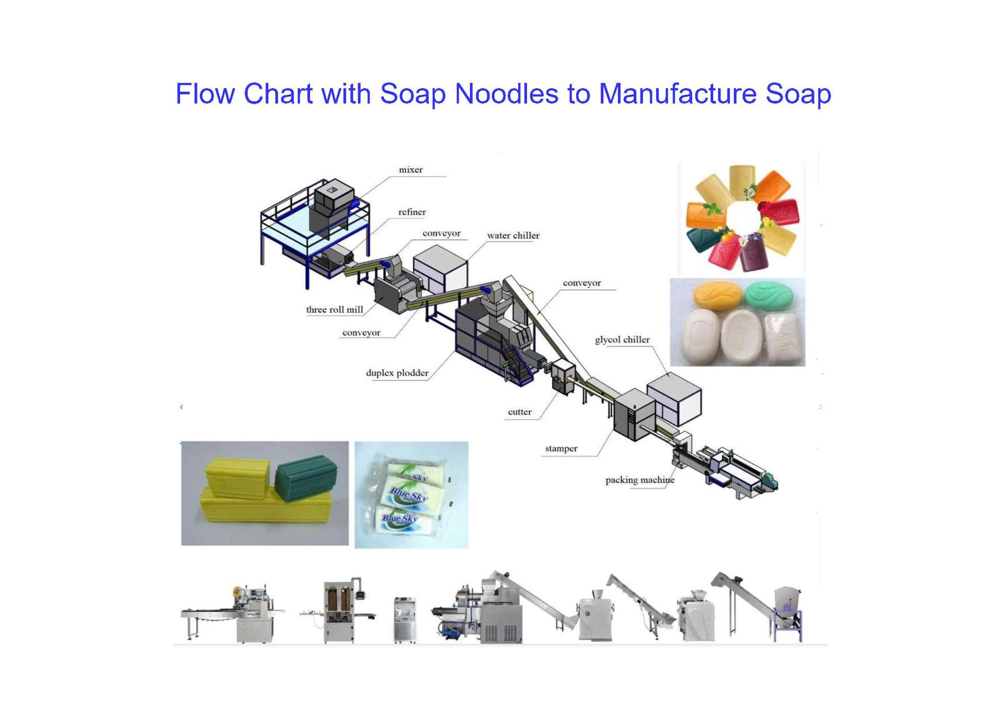
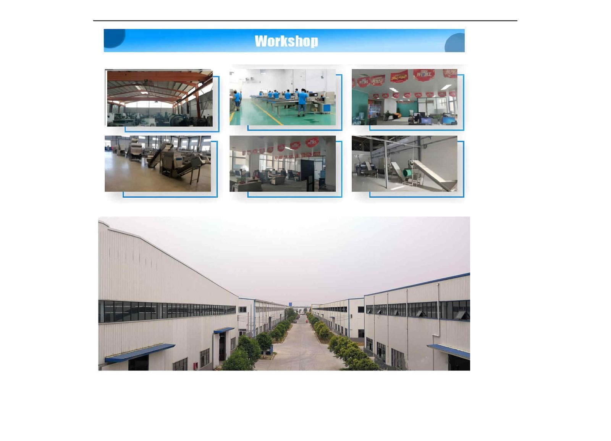
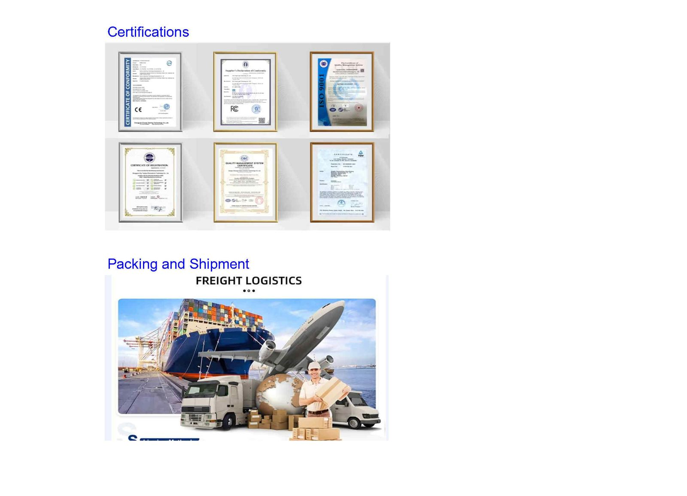
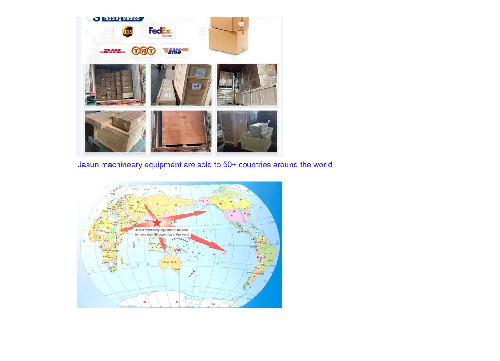

Reliable Industrial Soap Machinery Manufacturer
Established in 2005, Kaifeng Jasun Industry Co., Ltd. specializes in professional soap making machinery and complete production lines. With over two decades of industrial expertise, we are dedicated to providing global soap manufacturers with high-performance soap processing machineries from saponification to finished soap package. Our machines have exported to over 50 countries and district, including the developed countries like United States.
The Soap Manufacturing Process From Vegetable Oil / Animal Fats and Caustic Soda
The whole process is divided into two major steps.
The first step (Part A) is saponification and drying system to produce soap noodles. It is the saponification reaction of Vegetable Oil / Animal Fats and caustic soda to form a soap base. This soap base is then processed through a vacuum drying system and a pelletizer, which extrudes them into soap noodles.
The second step (Part B) is from soap noodles to produce finished soap. The soap noodles are put into a soap mixer, which blends the soap noodles with perfume and pigment. The mixture is then fed into a refine plodder (refiner). Its core objective is to thoroughly blend, homogenize, and mill the soap materials. After that, the soap noodles come to a three roll mill (three-roller grinder), where the soap noodles are ground into thin soap sheets. These thin sheets are transferred via a conveyor belt to a duplex vacuum soap plodder machine or a single screw soap plodder machine (soap extruder), where they are refined again and continuously extruded into a long soap bar with the desired shape. Afterward, the long bar is cut and shaped into individual soap bars of the required size using an automatic soap cutting machine (soap cutter) or a soap stamping machine (soap stamper / soap printer / soap press / soap punching machine). Finally, the finished soap bars are wrapped by a packaging machine (flow pillow soap packing machine / soap cartoning machine / paper soap packing machine).
A Complete Set of Soap Production Line From Oil Saponification to Finished Soap

Flow Chart: From Soap Noodles to Finished Soap
- Mixer – uniformly blends soap noodles with perfume, pigments, essential oils and additives.
- Refiner – pre-refines the mixed soap mass.
- Three roll mill – mills the soap for smoothness and uniform color and fragrance.
- Duplex plodder (vacuum) – extrudes the refined soap into a continuous, dense bar.
- Cutter – cuts the long bar into uniform blanks.
- Stamper – stamps blanks into finished bars with logos and shapes.
- Packing machine – wraps the finished soap for retail.
Conveyors link each stage; the water chiller and glycol chiller provide process cooling.

Part A:
Saponification and Vacuum Drying System — Soap Noodles Production Equipment
| 1 |  | Saponification and Vacuum Drying System (Small / Medium)Small medium integrated saponification and vacuum drying system, turning different oils and caustic soda into soap noodles. Capacity: |
| 2 |  | Saponification and Vacuum Drying System (Large)Large saponification and vacuum drying system, turning different oils and caustic soda into soap noodles. Capacity: |
Part B:
Mixing, Grinding, Extruding, Molding Equipment and Soap Packing Machine — Soap Production Line
- Mixer
- Three roll mill
- Soap plodder
- Soap cutter
- Soap stamper
- Soap packing machine
Soap Noodles Mixing, Refining and Milling Equipment
| 3 |  | Industrial Soap MixerCore Functions and Working Principle: This equipment is a critical piece of machinery in the front-end stage of the soap production line. It is primarily used to highly efficiently and uniformly blend soap noodles with various additives, such as perfumes, pigments, essential oils, and other auxiliary ingredients. The mixer is equipped with internal screw blades. During operation, the motor drives the main shaft to rotate, utilizing the mechanical motion of the screw to continuously lift, tumble, and scatter the soap noodles from the bottom. This powerful shearing and convective action allows liquid perfumes and solid pigments to rapidly penetrate and evenly coat the soap noodles in a short time. Consequently, it establishes a smooth, refined, and consistently colored soap base foundation for the subsequent milling and plodding (extruding) processes. Structural Features: |
| 4 |  | Refine PlodderApplications: Key Features: |
| 5 |  | Three Roller MillCrystal Transformation and Modification: After mixing, the internal crystallization of the soap may be uneven. The three-roll mill utilizes high-pressure extrusion to force the transformation of soap crystals, forming a crystalline structure with better ductility and resilience. This ensures that the final soap is less prone to cracking and does not easily become mushy when soaked in water. |
Vacuum Plodding and Soap Stamping Equipment
| 6 |  | Double-Stage Vacuum Soap Plodder (Vacuum Soap Extruder)High-Efficiency Vacuum Deaeration: The soap material undergoes complete extraction of air and bubbles within a sealed vacuum chamber. This renders the internal structure of the soap exceptionally dense and compact, effectively preventing internal cavities or cracks while making the final soap bar more durable and less prone to becoming mushy when soaked in water. |
| 7 |  | Automatic Soap Stamping Machine / Soap Stamper – XD120 ModelThree-Dimensional Compression Molding: The soap emerging from the previous process (the vacuum plodder) is merely a continuous long bar. Through the closure and clamping of precision upper and lower (or left and right) molds, this equipment stamps the soap blanks under high pressure into finished toilet soap bars featuring perfect contours, rounded corners, or specific three-dimensional shapes. |
| 8 |  | Automatic Toilet Soap Stamping Machine – XDA1000 TypeApplications: Key Features: |
Stamping, Cutting and Cooling Equipment
| 9 |  | Automatic Pneumatic Toilet Soap Stamping Machine – XD100Applications: Auxiliary Requirements: |
| 10 |  | Automatic Soap Embossing and Cutting MachinesPrecision Continuous Cutting: The core responsibility of this equipment is to precisely and rapidly cut the continuous bar of soap extruded from the vacuum plodder into uniform individual soap blocks (blanks) according to the preset target dimensions. |
| 11 |  | Low Temperature ChillerPrecision Deep Mould Cooling: This equipment primarily circulates and delivers low-temperature cooling liquid to provide continuous and forced temperature reduction for the metal moulds inside the automatic soap stamping machine. |
| 12 |  | Cooling Water MachineFrictional Heat Dissipation to Prevent Soap Melting: As the three-roll mill tears soap at high speeds and the vacuum plodder extrudes soap under heavy duty and high pressure, a substantial amount of physical frictional heat is generated. This equipment injects circulating chilled water into the hollow rollers of the mill and the barrels/jackets of the plodder to forcefully carry away heat, preventing the soap from softening, melting, or sticking to the rollers due to overheating. |
Vacuum, Mini Line and Packing Equipment
| 13 |  | Vacuum PumpHigh-Efficiency Chamber Vacuum Extraction: The core responsibility of this equipment is to connect with the sealed chamber of the vacuum plodder, completely and forcefully extracting the air and bubbles trapped between the soap granules inside. |
| 14 |  | Mini Integrated Soap Production EquipmentOne-Stop Micro Soap Production Line: This is a micro soap production line designed specifically for home workshops, artisans, small studios, or educational laboratories. Key Features: |
| 15 |  | Soap Packing Machine – Pillow StyleHigh-Speed Full-Automatic Pillow-Style Packaging: The core responsibility of this equipment is to automatically wrap the molded solid soap bars into plastic composite film, executing horizontal sealing and cutting at both ends and longitudinal sealing at the back to form a fully sealed, pillow-style package. |
Cartoning, Paper Packing and Custom Moulds
| 16 |  | Cartoning Machine / Soap Packing Machine – Cardboard Box StyleFull-Automatic Carton Forming and Cartoning: The core responsibility of this equipment is to automatically suction flat, pre-fabricated cardboard blanks, erect them into formed cartons, precisely push the soap bars inside, and automatically complete the carton lid folding, tucking, or hot-melt glue sealing. |
| 17 |  | Soap Packing Machine – Soft Paper TypeDouble-Layer Soft Paper Automatic Wrapping and Tucking: The core responsibility of this equipment is to apply a two-layer wrap to the molded soap bars. The internal layer is typically a stiff paperboard stiffener/liner (used for shape retention and structural support), while the outer layer is a coated soft paper or composite paper printed with exquisite graphics. During packaging, it automatically executes end-folding and corner-tucking, forming a classic, retro wrapped-bar appearance. |
| 18 |  | Soap Mould – Customized Shape, Size and LogoSoap moulds are customized as per buyer required soap shape, size and logo. Imparting the Final Three-Dimensional Geometric Form: The mould consists of two primary mating halves (the upper male die and lower female die). When the soap blank is fed inside and subjected to high-pressure mechanical or pneumatic stamping, the soap body undergoes plastic deformation within the mould cavities, giving rise to perfect oval, round, rectangular, or various bespoke irregular geometries. |
Workshop
Our workshop manufactures and assembles the complete range of soap making machinery – from saponification systems to packing machines – with in-house machining, assembly and testing.

Certifications
Our soap making machinery holds international certifications including CE and ISO 9001 quality management system certification, meeting export requirements for 50+ countries.
Packing and Shipment
FREIGHT LOGISTICS – machines are packed in export-standard wooden cases and shipped worldwide by sea, air or express.

Shipping Method
- Express courier: UPS, FedEx, DHL, TNT, EMS (spare parts and small machines)
- Sea freight: FCL and LCL for complete production lines
- Air freight available for urgent orders
Jasun machinery equipment are sold to 50+ countries around the world.

FAQ – Frequently Asked Questions
Q1: Do you accept the customization?
All of our machines can be customized as per client's requirement.
Q2: How do you guarantee this machine normally operating?
Every machine is tested by our factory before shipping. We will adjust the machine to optimal effect before delivery, and spare parts are always available and free for you in the warranty year.
Q3: How can I install this machine when it arrives?
We will send the engineers overseas to help client installing, commissioning and training.
Q4: What should I do to choose the best machine for us?
1) Tell us the material you want to process – we will choose the suitable type of machine for you to consider. 2) Then tell us the filling capacity you need for the machine. 3) At last tell us the inner diameter of your container to help us choose the best diameter of the filling head for you.
Q5: Do you have manual or operation video for us to know more about the machine?
Yes, we will send you the manual and operation video after you ask for us.
Q6: If some spare parts broke, how to solve the problem?
First of all, please take a picture or make a video to show the problem parts. After the problem is confirmed by our engineer, we will send you the spare parts for free within the warranty year, but the shipping cost should be paid by your side.
Contact Us for a Free Quote & Catalog
Get in touch with our engineering team directly via WhatsApp or Email for prices.
💬 Chat on WhatsApp WhatsApp: +86-13937853263✉ Email: jasunmachinery@gmail.com